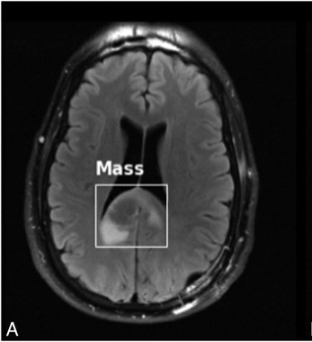
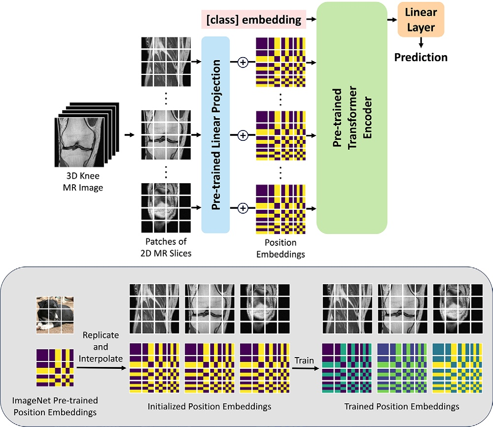

Our paper, “The Challenge of Rendering Abnormalities Accurately Using Deep Learning-Based Reconstruction in Accelerated Brain MRI,” was published online in Investigative Radiology.
About
I am a PhD candidate in Biological and Biomedical Sciences, Artificial Intelligence and Emerging Technology (AIET), in the Windreich Department of Artificial Intelligence and Human Health at the Icahn School of Medicine at Mount Sinai.
My research focuses on computational pathology, foundation-model evaluation and adaptation, weakly supervised learning, and clinically grounded model validation. I study how models generalize across cohorts, tissue types, clinical tasks, and demographic groups.
Recent News
View all“An Introduction to Pathology Foundation Models” was published in Head and Neck Pathology.
Our NeuroFM preprint on a domain-specific foundation model for neuropathology was released.
Presented our paper, “Predicting Patient Self-reported Race From Skin Histological Images with Deep Learning,” as a poster at FAIMI 2025, held with MICCAI 2025 in Daejeon, South Korea.
MR-Transformer was published online in Radiology: Artificial Intelligence.
Education

Icahn School of Medicine at Mount Sinai
PhD, Biological and Biomedical Sciences
Artificial Intelligence and Emerging Technology (AIET)
2023–2028 (expected)
New York University
MS, Biomedical Informatics
2021–2022
University of Wisconsin–Madison
Visiting Student, Applied Physics
2019
Northeastern University
BS, Applied Physics
2016–2020Experience

NYU Langone Health
Assistant Research Scientist, Department of Radiology
Sep 2022–Jul 2023
Elekta Shanghai R&D
Software Development Engineer, R&D
Oct 2020–Jul 2021Beam Modeling Intern, R&D
Dec 2019–Oct 2020Selected Publications
View all
2026
The Challenge of Rendering Abnormalities Accurately Using Deep Learning-Based Reconstruction in Accelerated Brain MRI
Shengjia Chen, Patricia M. Johnson, Yvonne W. Lui
Investigative Radiology

2025
Predicting Patient Self-reported Race From Skin Histological Images with Deep Learning
Shengjia Chen et al.
MICCAI 2025 FAIMI, LNCS 15976

2025
A Clinical Benchmark of Public Self-Supervised Pathology Foundation Models
Gabriele Campanella, Shengjia Chen et al.
Nature Communications

2025
MR-Transformer: A Vision Transformer-based Deep Learning Model for Total Knee Replacement Prediction Using MRI
Chaojie Zhang, Shengjia Chen et al.
Radiology: Artificial Intelligence

2024
Benchmarking Embedding Aggregation Methods in Computational Pathology
Shengjia Chen et al.
MICCAI 2024 COMPAYL, Proceedings of Machine Learning Research